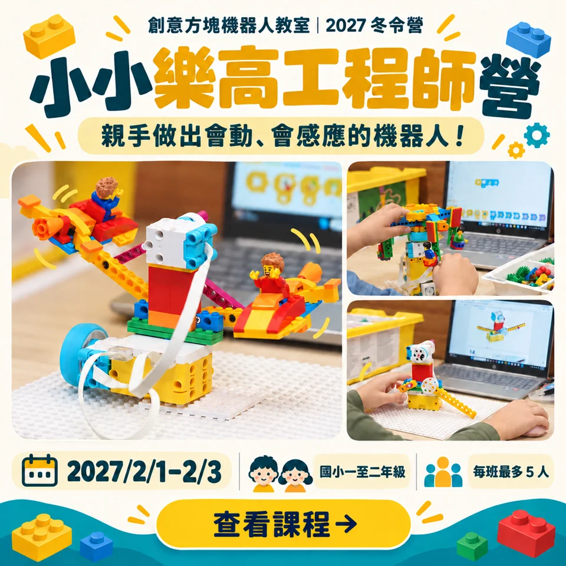

小小樂高工程師營
用樂高做出會動、會感應的機器人，讓一、二年級孩子輕鬆踏出工程創作第一步！
國小一至二年級・零經驗可
三日完整課程 方案原價 NT$ 5,200；2026/11/1 23:59 前報名早鳥價 NT$ 4,700
每班最多 5 人 · 收件後由教室確認名額

把想像，變成自己的作品。
摩天輪怎麼轉起來？機器人如何辨認顏色？用 LEGO Education SPIKE Essential，把積木組裝與程式控制結合。從馬達、感應器到相撲挑戰，在動手做與反覆測試中，練習讓想法化成動作。
孩子會練習的三件事
01 馬達與動作
02 感應器互動
03 相撲機器人挑戰
適合對象：國小一至二年級・零經驗可。不需相關經驗。
3 天，讓發現一步步發生。
課程會依實際學習情況調整，重視每位孩子動手探索的過程。
每日包含午餐與午休；實際課程依學習情況調整。
DAY 1
讓作品動起來
組裝摩天輪，認識馬達並用程式控制作品。
DAY 2
感應器小幫手
組裝行李分類機，探索顏色感應與對應動作。
DAY 3
我的相撲機器人
調整結構與程式，進行挑戰並分享發現。
清楚選方案，安心安排寒假。
三日完整課程
方案原價 NT$ 5,200；2026/11/1 23:59 前報名早鳥價 NT$ 4,700含午餐。每位孩子使用一套 LEGO Education SPIKE Essential 教具。
3 天・含午餐・09:00–16:00
選擇此方案，立即報名早托每人每天加 100 元，可於報名時逐日選擇；晚托依實際接回時間另計。
上課前，家長想知道的事。
一天的節奏
09:00–16:00 上課，包含午餐與午休。
08:30–09:00 一般到班。
08:00–08:30 早托須預約，每天 100 元。
不提供點心，孩子可自行攜帶。
安心接送
16:00–17:30 免費留班等候接回。
17:30 後每半小時 100 元，不足半小時以半小時計，最晚 19:00 接回。
在萬華，一起動手做
創意方塊機器人教室
台北市萬華區莒光路347巷20號1樓
開啟 Google 地圖 ↗
小班，讓探索有空間
1 人即開班，每班最多 5 人。三個營隊皆可零經驗參加；遙控車營仍須符合年級或組裝能力條件。
需要自備電腦或教具嗎？
不需要。Scratch遊戲程式營由教室提供電腦與帳號；小小樂高工程師營每位孩子使用一套 SPIKE Essential 教具。
作品可以帶回家嗎？
遙控車可帶回方案內含市價 3,000 元的正版樂高科技系列越野車及遙控套組（副廠）；SPIKE Prime 課堂使用方案及小小樂高工程師營使用教室教具，作品不帶回。
缺席、轉讓及退費怎麼處理？
個人因素缺席無法補課；名額可以轉讓，請先聯絡老師確認接替孩子資格。退費依下列營隊退費辦法辦理。
營隊退費辦法
1. 個人因素退費
以開課首日往前推算，不含開課當日。
- 開課前 31 日（含）以上：退還 90% 費用。
- 開課前 21 至 30 日：退還 80% 費用。
- 開課前 8 至 20 日：退還 70% 費用。
- 開課前 1 至 7 日：退還 50% 費用。
- 開課當日及開課後：恕不退費，亦不提供補課。
2. 傷病與不可抗力因素
- 法定傳染病／重大傷病：憑醫療診斷證明，開課前可申請全額轉梯，或退還 90% 費用；開課期間請假，依「未上課天數」退還 50% 費用。
- 天災停課：遇颱風等政府公告停課，依未上課天數比例無息全額退還。
送出表單就算報名成功嗎？
表單送出只是收件；請加入 LINE，告知孩子姓名與報名編號。老師確認名額及付款資訊後，完成繳費並收到教室確認才算完成報名。
讓孩子的下一個作品，從這裡開始。
小小樂高工程師營 · 2027/2.01 — 2.03